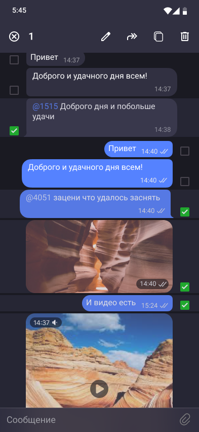

NDA. Мессенджер с высоким уровнем шифрования
Реальное название продукта не раскрывается по условиям NDA. Спроектировала с нуля мессенджер для безопасных бизнес-коммуникаций внутри команд и организаций, работающих с конфиденциальной информацией.
Задача
Спроектировала с нуля мессенджер для безопасных бизнес-коммуникаций внутри команд и организаций, работающих с конфиденциальной информацией. До этого сотрудники такого рода компаний были вынуждены использовать обычные мессенджеры и почту для передачи документов, рискуя утечкой данных, а существующие корпоративные решения оказывались слишком сложными в настройке. Задачей было создать B2B-продукт, который прост в использовании, как популярный потребительский мессенджер, но при этом визуально и логически транслирует надёжность.
В команде было два UX/UI дизайнера. Я отвечала за UX всего приложения — базовую механику мессенджера (чаты и управление сообщениями, создание и администрирование групп, контакты, медиа и файлы, голосовые сообщения, звонки, реакции) и отдельно, глубже, — сценарии безопасности: исследование, онбординг, обычный и тревожный ПИН-коды, настройки безопасности. Визуальную систему интерфейса и финальные экраны чата дорабатывали совместно со вторым дизайнером.
Исследование и конкурентный анализ
Проект был закрытым: с заказчиком я напрямую не работала — общение шло через посредника, и часть данных, включая доступ к конечным пользователям и деталям инфраструктуры безопасности, была недоступна по условиям NDA. Это осознанное ограничение процесса, а не пробел в работе: в продуктах с высоким уровнем конфиденциальности прямой доступ к пользователям часто закрыт по тем же причинам, по которым существует сам продукт. Поэтому исследование строилось на трёх источниках: доменном анализе рынка защищённых коммуникаций, требованиях и вводных, переданных через посредника (кто аудитория, какие сценарии критичны, какие есть внутренние ограничения), и разборе аналогов — с фокусом на то, где они теряют доверие пользователя или усложняют ему жизнь.
Сравнила три типа решений, с которыми аудитория уже могла быть знакома:
| Критерий | Signal | Telegram Secret Chats | Типовое корпоративное решение |
|---|---|---|---|
| Прозрачность статуса шифрования | Индикация есть, но требует знания продукта | Статус скрыт в настройках, не виден в моменте переписки | Как правило, не вынесен в интерфейс — шифрование работает «фоном» |
| Порог входа | Низкий, привычный чат-интерфейс | Низкий, но секретный чат — отдельный режим, а не основной | Высокий: настройка через IT, обучение сотрудников |
| Доверие через визуальные сигналы | Минимальное, опирается на репутацию продукта | Минимальное | Формальное — сертификаты и регламенты, а не сам интерфейс |
| Гибкость админ-настроек | Корпоративного администрирования нет | Корпоративного администрирования нет | Есть, но избыточно сложная — рассчитана на IT-отдел, а не на рядового администратора |
«Если визуализировать статусы шифрования простыми и понятными индикаторами прямо в интерфейсе чата — это повышает доверие и ощущение контроля у пользователя»
- Инсайт. Ни один из аналогов не закрывает сценарий «меня заставляют разблокировать телефон» — скрытой защиты от принудительного доступа нет ни у кого. Это привело к идее тревожного ПИН-кода.
- Инсайт. Корпоративные решения перекладывают всю ответственность за безопасность на сложную админ-панель и IT-отдел — рядовой пользователь не может повлиять ни на что сам, что не подходит команде без выделенного IT-специалиста. Отсюда — разделение настроек на базовый и расширенный уровень.
Роли пользователей
Прямых интервью с пользователями заказчика не было, поэтому вместо персон с вымышленными именами и цитатами собрала два ролевых портрета — на основе требований задачи и вводных, переданных через посредника. Это рабочий инструмент для проектных решений, а не результат полевого исследования.
- Задача: делится с командой и клиентами чувствительными документами по сделкам, часто с телефона между встречами
- Что значит «безопасно»: уверенность, что переписку не прочитает никто посторонний, включая случайного человека, взявшего телефон в руки
- Раздражает в существующих решениях: сложная настройка корпоративных мессенджеров, необходимость обращаться в IT по каждой мелочи
- Вызывает доверие с первого касания: явный, считываемый статус защиты переписки, а не спрятанный в настройках
- Технический уровень: уверенный пользователь, но не разбирается в криптографии и не хочет в ней разбираться
- Задача: обсуждает с коллегами персональные данные сотрудников — зарплаты, личные дела — иногда с личных устройств
- Что значит «безопасно»: уверенность, что случайный человек, открывший её телефон или ноутбук, не увидит содержимое переписки
- Раздражает в существующих решениях: обычные мессенджеры не дают скрыть чат «на всякий случай», корпоративные — перегружены техническими терминами
- Вызывает доверие с первого касания: простой, «человеческий» интерфейс без пугающей терминологии и понятные индикаторы состояния
- Технический уровень: базовый — оценивает продукт по ощущению, а не по техническим характеристикам
Процесс: было → гипотеза → стало
Настройка безопасности (онбординг)
Гипотеза: вместо сухого технического текста про шифрование и ключи — показать процесс через понятный пошаговый флоу с минимумом текста на каждом шаге: активация аккаунта по идентификатору и настройка ПИН-кода для входа, без упоминания криптографических терминов.


Авторизация
Проблема: слабая защита входа по одному коду создавала риск взлома. Решение: добавлен «тревожный ПИН» — отдельный код, который при вводе в момент запроса обычного ПИН-кода незаметно защищает мессенджер от нежелательного доступа, блокируя приложение вместо обычного входа.


Активация и вход по ПИН-коду
Логика входа продумывалась как последовательность состояний, а не отдельные экраны: важно было явно развести, что происходит при вводе обычного ПИН-кода, тревожного и при ошибке.
При следующем входе пользователь вводит ПИН-код — дальше три возможных сценария:
Открывается мессенджер как обычно, доступны все чаты и функции.
Мессенджер выглядит заблокированным для постороннего — экран «Приложение заблокировано» вместо чатов, без явного признака, что был введён именно тревожный код.
Запрос ввести код ещё раз; после нескольких неудачных попыток — временная блокировка входа.
Настройки безопасности
Гипотеза: сложные технические настройки нужно разделить по уровню пользователя. Решение: базовый раздел с понятными пунктами — сменить ПИН-код, сменить тревожный ПИН-код, очистить историю всех чатов, — а более чувствительные действия скрыты за отдельным подтверждением.


Финальное решение
- Интерфейс чата: минималистичный дизайн с крупными элементами управления, тёмная тема как основной режим для снижения визуального шума при постоянном использовании.
- Скомпрометированный контакт подсвечивается меткой не в одном месте, а сразу в нескольких точках интерфейса — в списке чатов, в списке контактов и при выборе участников группы. Индикатор угрозы должен быть на виду в любой момент, а не только там, где пользователь решит его поискать, — это усиливает ощущение постоянного контроля, а не разового предупреждения.
- Реакции на сообщения — сдержанный набор со своим пикером, стилизованный под общий строгий стиль интерфейса. Это та же задача, что упомянута дальше в «Выводах», — не дать реакциям выглядеть «игрушечными» на фоне строгого интерфейса; здесь видно, как она решена на экране: минималистичная графика и компактный пикер, который не перетягивает внимание с самого сообщения.
- Отправка файлов и медиа: вложения — документы, фото, видео, голосовые сообщения — отображаются прямо в ленте чата с понятной индикацией статуса доставки.
- Администратор может гибко настраивать права других участников группового чата — удаление сообщений, блокировка пользователей, пригласительные ссылки, проверка ПИН-кода, — а на уровне самой группы отдельно управляет авто-удалением сообщений и составом администраторов, без риска лишних действий со стороны обычных участников.


Также спроектировано
Помимо флоу безопасности спроектировала базовую механику мессенджера целиком — звонки, голосовые сообщения, контакты, управление сообщениями — в той же дизайн-системе и логике, что и разделы выше. Ниже — витрина охвата, без разбора каждого экрана отдельно.



Результат
Проверяла решения в лёгком юзабилити-прогоне с 5–6 участниками из целевых ролей — не полноценное количественное исследование, а быстрая проверка, где сценарий вызывает вопросы. По его итогам поменяла три вещи:
- Онбординг. Первая версия объясняла шифрование техническими терминами — участники останавливались и переспрашивали, что значит «сквозное шифрование» или «ключ доступа». Заменила текст на пошаговый флоу без терминологии — на этом шаге вопросов больше не возникало.
- Тревожный ПИН. В первой версии экран подтверждения тревожного кода визуально не отличался от обычного — в паре прогонов участники не были уверены, какой код только что задали. Развела формулировки экранов подтверждения, оставив предупреждающую иконку только на этапе настройки — но не при вводе кода, чтобы не выдать функцию постороннему.
- Настройки безопасности. Изначально все пункты — от смены ПИН-кода до просмотра отпечатков ключей — шли одним списком, и участники не понимали, что можно менять без риска, а что требует более глубокого понимания. Разделила настройки на базовый и расширенный уровень.
Дизайн-систему и прототипы всех экранов передала в разработку в полном объёме.
Выводы
В продуктах про безопасность дизайн — это переводчик между технологией и пользователем, а успех измеряется не в битах шифрования, а в ощущении понятности и контроля. При повторном запуске заложила бы A/B-тест двух вариантов онбординга — метафоричного и прямого — с самого начала, чтобы быстрее получить данные.
Отдельным вызовом было сделать пак реакций, который не выглядит «игрушечным» в строгом интерфейсе, — решением стали минималистичная графика и приглушённая, но информативная анимация.